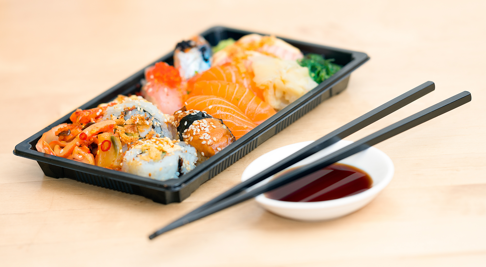

Sushi Recipe - Salmon Nigiri

Description of Dish
This is a classic Japanese dish. It is made using fresh salmon and sushi rice-- the simplicity is what truly makes salmon nigiri sushi so special and delicious.
Ingredients
- Short grain rice
- Rice vinegar
- Sushi grade salmon
- Ginger (to garnish)
- Wasabi (to garnish)
- Soy sauce for dipping
Directions
- Cook the sushi rice. When it is still warm, season it with sushi rice vinegar.
- Slice the salmon against the grain at a 45 degree angle at about 3 inches long, 1 inch wide, and 1/4 inch thick.
- Shape the rice with the palm of your hand into an oval shape.
- Optional, but you can add a little dab of wasabi onto the top of the rice.
- Place the salmon piece on top of the rice you made, bend your fingers to hold the salmon and rice in place, and lightly squeeze the two together with your fingers.
- Arrange and serve on plate of your choice.
Home